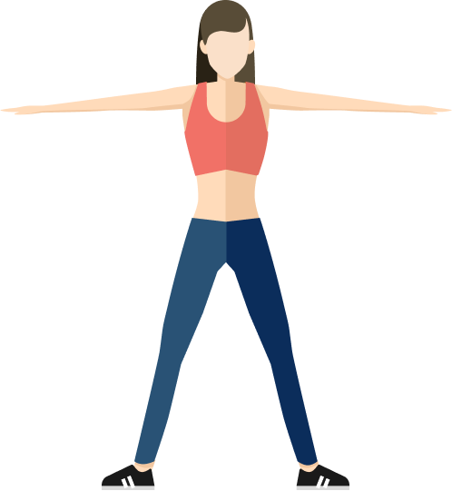
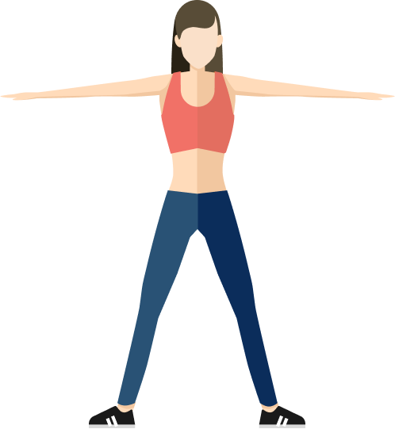
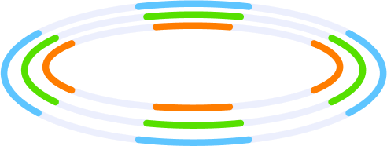
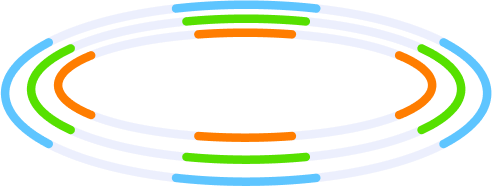

心血管检测报告
检测时间：{{inspectDateStr}}
{{userInfoView.name}} 性别：{{userInfoView.sex==1?'男':'女'}} 年龄：{{userInfoView.age}}
以下是本次检测的评分
{{totalScore}}分
-良好-
以下是本次检测详细结果
血压 {{bpView.bpScore}}分
高压 {{bpView.sP}}mmHg
低压 {{bpView.dP}}mmHg
心脏 {{reportStrData.hartScore}}分
共检查 {{abnormalCount.hartSum}}项
正常项 {{abnormalCount.hartCount}}项
异常项 {{abnormalCount.hartAbnormalCount}}项
血管 {{reportStrData.vesselScore}}分
共检查 {{abnormalCount.vesselSum}}项
正常项 {{abnormalCount.vesselCount}}项
异常项 {{abnormalCount.vesselAbnormalCount}}项
血液 {{reportStrData.bloodScore}}分
共检查 {{abnormalCount.bloodSum}}项
正常项 {{abnormalCount.bloodCount}}项
异常项 {{abnormalCount.bloodAbnormalCount}}项
 微循环 {{reportStrData.mcr5Score}}分
微循环 {{reportStrData.mcr5Score}}分
共检查 {{abnormalCount.mcrSum}}项
正常项 {{abnormalCount.mcrCount}}项
异常项 {{abnormalCount.mcrAbnormalCount}}项
收缩压（高压） {{bpView.sP}} {{bpView.sP}}
范围值90-140单位mmHg
舒张压（低压） {{bpView.dP}} {{bpView.dP}}
范围值90-140单位mmHg
历史血压数据
高血压小知识
心脏详细检查结果
潜在风险指标
{{item.metricName}}
未见异常指标
{{item.metricName}}
{{item.metricName}} {{item.tv}} {{item.tv}} {{item.tv}}
范围值{{item.sv}}{{item.metricUnit}}
血管详细检查结果
潜在风险指标
{{item.metricName}}
未见异常指标
{{item.metricName}}
{{item.metricName}} {{item.tv}} {{item.tv}} {{item.tv}}
范围值{{item.sv}}{{item.metricUnit}}
微循环详细检查结果
潜在风险指标
{{item.metricName}}
未见异常指标
{{item.metricName}}
{{item.metricName}} {{item.tv}} {{item.tv}} {{item.tv}}
范围值{{item.sv}}{{item.metricUnit}}
血液详细检查结果
潜在风险指标
{{item.metricName}}
未见异常指标
{{item.metricName}}
{{item.metricName}} {{item.tv}} {{item.tv}} {{item.tv}}
范围值{{item.sv}}{{item.metricUnit}}
重疾风险预测
肝病科、消化内科
肝病科、消化内科
肝病科、消化内科
肝病科、消化内科
肝病科、消化内科
肝病科、消化内科
肝病科、消化内科
采集数据波形图 更多
综合诊断结果
心搏出量高，心脏负荷过重，会导致心脏严重受损，形成慢性心功能不全，长期心脏负荷过重易诱发心力衰竭，一般与冠心病、高血压心脏病、心肌病、肺心病、风湿性心脏病等心血管病直接相关，故应引起足够重视。
1)经常用本仪器检查,注意相关数值的变化，分析了解其原因。如自觉明显不适，应去医院作进一步检查治疗。
2)注意日常生活起居慎风寒，戒烟禁酒，饮食应节制，心情常愉悦。
3)积极治疗相关疾病，清除诱发因素。
BMI指数
 {{userInfoView.bmiValue}}过瘦
{{userInfoView.bmiValue}}过瘦

 {{userInfoView.bmiValue}}标准
{{userInfoView.bmiValue}}标准

 {{userInfoView.bmiValue}}超重
{{userInfoView.bmiValue}}超重

 {{userInfoView.bmiValue}}肥胖
{{userInfoView.bmiValue}}肥胖

体重过低，易导致身体抵抗力下降，免疫力降低。
请继续保持。
超重是引起慢性病的重要危险因素，超重人群患高血压的危险是体重正常者的3~4倍，患糖尿病的危险是体重正常者的2~3倍。
肥胖是引起慢性病的重要危险因素，肥胖者中90%以上易患高血压或糖尿病，缺血性脑卒中发病的相对危险度为2.2。


 



 {{userInfoView.height}}cm
{{userInfoView.height}}cm
 {{userInfoView.bmiValue}}
{{userInfoView.bmiValue}}
 {{userInfoView.weight}}kg
{{userInfoView.weight}}kg


 

导致疾病
改善建议